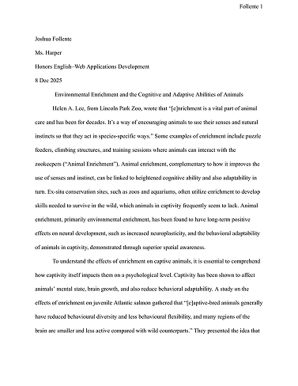
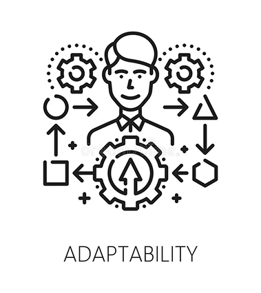

This was a research project in which we had to write a three to four-page research paper to study the effect of environmental and cognitive enrichment on animals in captivity.

Researching: I looked up many different sources in order to find information on my topic, focusing on credible sources that were published by professors or trustworthy journals.
Information Synthesis: I utilized information from five credible sources in order to form a cohesive argument that guides readers through a specific thought process.
AI literacy: I took advantage of AI tools to make the search for credible sources easier.
I was having trouble finding trustworthy sources that were relevant to my topic.
I consulted Perplexity’s AI to help me discover sources that related to my research question. I then carefully selected the best and most useful sources from the links that it provided me.
During my research, I discovered that, for the most part, only studies on environmental enrichment’s effects on animals' cognitive and adaptive abilities have been studied.
I updated my research question to be more specific to what I found in my research, tightening the scope from cognitive and environmental enrichment to just environmental enrichment.
I wasn’t knowledgeable about how to format a Works Cited Page in MLA format.
I utilized online resources that would format citations for me. Using NoodleTools, I only had to either copy a pre-formatted citation and add it to the NoodleTools project or manually input the site and author information to add a source citation without having to worry about formatting myself.
Adaptability: Since I discovered that, for the most part, only studies on environmental enrichment’s effects on animals' cognitive and adaptive abilities have been studied, rather than trying to handpick out research that would help answer my current research question, I adjusted my research question to fit the information I was finding.
Resilience: At the beginning of this project, I was actually far behind the project timeline in terms of finding and taking notes on sources to use in the research paper. I pushed through that period, caught up to the project timeline, and eventually earned over a 90% mark on this assignment on the final submission date.
